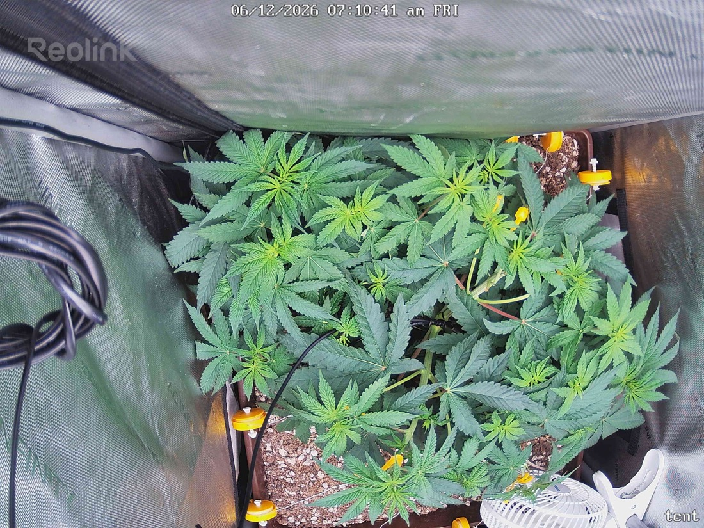

← All reports
Jun 12, 2026
Fri Jun 12, 2026 — 7:10 AM

Prognosis
Daily check — 6/12, day 9 of 12/12 flip
- What changed: Canopy looks slightly more spread/flatter than yesterday — the LST tightening you did on 6/11 is showing. The colas are laying more horizontal and the central growth tips are sitting more even across the top. New LST ties (yellow clips) visible on the right and bottom edges. Modest top growth, no stall.
- Color/posture: Uniform medium-to-deep green across the canopy, leaves flat and turgid. Morning posture is normal — no overnight droop, no clawing, no taco.
- Stress signs: None obvious. No new yellowing, no tip burn, no bleaching despite ~600 PPFD. Lower defoliation from 6/11 looks clean — no obvious regrowth of floor-touching leaves crowding the base. Can't resolve mite stippling at this camera distance, but no visible webbing and upper-surface color is even.
- Mites: You reported zero mites on inspection 6/11 and first Green Cleaner went down 6/10 — that's encouraging but it's still early in the egg-hatch window. Stick to the plan: next spray ~6/13, undersides to drip.
- Phase check: Germinated 4/28, flipped 6/3 — so ~6 weeks veg, now day 9 of flower. Right on track. You should be in the stretch; expect pre-flower pistils at the top nodes within the next several days if not already starting. Horizontal training now is well-timed to even out the canopy before stretch finishes.
Suggested next actions:
- Stay on the Green Cleaner cadence (next round ~6/13); keep checking undersides each spray night.
- Watch soil — last watered 6/7 (1 gal), so you're ~5 days out; check weight/surface today, likely due for a bottom water in the next day or two as flower stretch ramps water demand.
- Hold light at ~600 for now; fine to nudge toward 700 once stretch is clearly underway and you continue seeing zero light stress.
Overall: Healthy, on-schedule plant entering flower stretch — training is paying off and no new red flags; just keep the mite protocol going and watch watering.